Explore two contrasting sort algorithms, the inefficient Selection sort and a significantly faster Merge sort. Use Binary search to locate a specific element in a sorted array. Explore the performance of these algorithms. The results may surprise you.
Any list of types whose instances are comparable may be sorted into ascending or descending order.
For example the list of integers:
3 3 4 1 0 9 6 5 2 8 7is sortable into either the ascending list:
0 1 2 3 3 4 5 6 7 8 9or the descending list:
9 8 7 6 5 4 3 3 2 1 0A further example is the sorting of strings. Here is a an unsorted list of strings followed by the same list sorted in ascending alphabetical order:
The quick brown fox jumped over the lazy dogbrown dog fox jumped lazy over quick The theIt is also possible to sort objects of classes such as those we have already encountered, for example Circle or Rectangle.
In the case of Circle we might wish to sort a list of circle objects by comparing their areas and arranging the sorted list in order of increasing areas.
But equally we might wish to sort the list of circle objects by reference another property such as their colours.
Rectangle objects could be sorted with reference to their perimeters, areas and so on.
Several sorting algorithms have been developed, Merge sort and Quicksort being two of the most popular.
Further examples are Insertion sort, Selection sort, Heap sort, Bubble sort and Shell sort.
In this lab we shall examine Selection sort and Merge sort. These two have been chosen so as to contrast an efficient and populular algorithm, Merge sort, with the extremely inefficient Selection sort.
An idea of the relative performance of these two algorithms may be had by comparing the times to sort an array of one quarter of a million randomly selected integers.
In the same set of tests 500 million integers were sorted by Merge sort in a little over 2 minutes.
Using a mathematical model, described in a following step, suggests that the same sort would take in the order of 10 years using Selection sort. Note that this figure is very approximate as very small changes in the coefficients used in the model extrapolate to very large changes as the size of the sort space grows.
These tests were performed on an iMac.
Later, during ICTSkills studio, we may have an opportunity to study Quicksort, considered one of the most important algorithms of the twentieth century in a poll conducted by "Computing in Science & Engineering".
Sorting algorithms may be used to sort any comparable types but for simplicity we shall restrict ourselves to integers in this lab.
We shall use the following small unsorted integer array to demonstrate how the algorithm works:
int[] a = {20, 24, 17, 12, 11, 14, 22, 19}Assume the sorting algorithm is part-way through sorting the array as follows:
a = {11, 12, 14, 24, 20, 17, 22, 19}Elements at positions 0 to 2 inclusive in the array have been sorted as follows:
{11, 12, 14, ...}We adopt the index or pointer named i to indicate the position of the next element to be sorted, in this case element at index 3 which is 24.
We traverse the remainder of the array from position pointer i to the last element namely length - 1 where length is the number of elements in the array.
If we encounter an element less than a[i] then we exchange this element a[j] with a[i] and continue to search to the end of the array.
Figure 1 shows how the the search proceeds from position i until an element less than 24 is found.
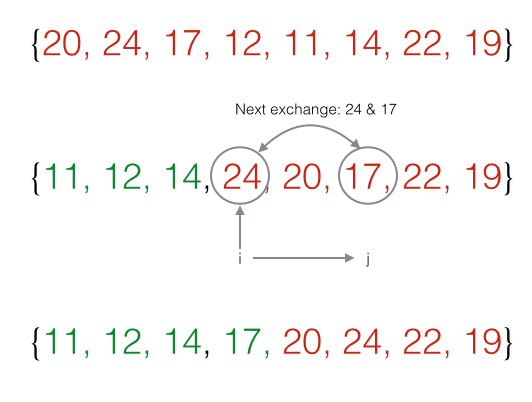
We shall now implement a sorting algorithm as described in the previous step.
Create a new project named Sorting.
Create a new class SelectionSort in the project.
Within this class implement a method sort as follows:
public static void sort(int[] a)
{
for (int i = 0; i < a.length; i += 1)
for (int j = i; j < a.length; j += 1)
if (a[j] < a[i])
exchange(a, i, j);
}Add the following private method exchange:
private static void exchange(int[] a, int i, int j)
{
int val = a[i];
a[i] = a[j];
a[j] = val;
}See Figure 1 for a further brief explanation of how the algorithm works.
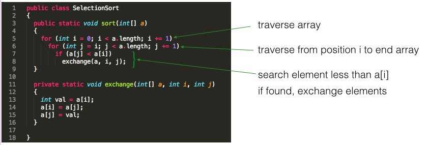
To test the algorithm create another class in the Sorting project named TestSelectionSort and add the following method. Alternatively, add test() to the class SelectionSort.
public static void test()
{
int[] a = {20, 24, 17, 12, 11, 14, 22, 19};
print(a);
sort(a);
print(a);
}Next add the print method:
public static void print(int[] a)
{
for (int val : a)
System.out.print(val + " ");
System.out.println();
}Compile and execute the test method.
The output should be as shown in Figure 2.
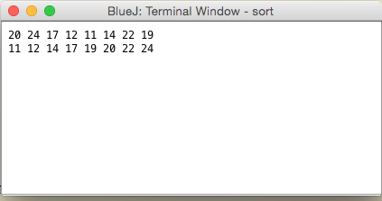
Experiment with different arrays.
We shall now explore the much more efficient Merge sort using the same test array as before:
int[] a = {20, 24, 17, 12, 11, 14, 22, 19};Figure 1 demonstrates how over 4 iterations the entire array is modified such that it comprises sorted pairs blocks, each block containing 1 element.
No change is required to the first pair of blocks {20, 24} as these are already in ascending order.
The second pair of blocks {17, 12} are rearranged as {12, 17} and so on.
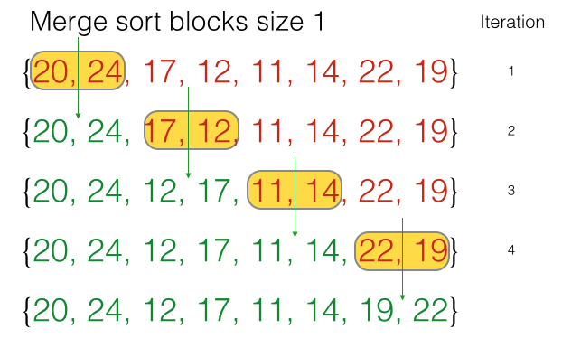
When the entire array comprises pairs as shown in Figure 1, blocks of size 2 are then considered. This is shown in Figure 2.
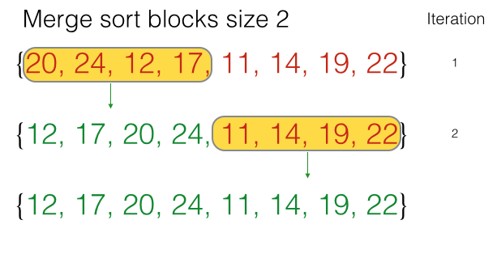
At the end of the steps shown in Figure 2 the array is as follows:
{12, 17, 20, 24, 11, 14, 19, 22}
This is the complete array. Observe that it comprises two sorted blocks:
{12, 17, 20, 24}
{11, 14, 19, 22}
The next and last step is to merge these blocks, each of size 4 elements, into the final sorted array. This is shown in Figure 3.
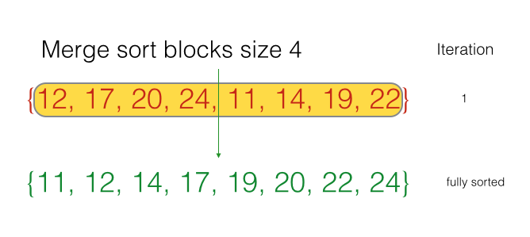
The following is a brief description of the Merge sort algorithm.
First, an auxiliary array aux[] is declared and instantiated, its size matching that of the array to be sorted (referred to as a[] in the algorithm below).
A study of the previous step Merge sort shows that the algorithm may be developed using 2 loops.
The outer loop sets the size of the block to be merged.
Start with block size 1 and set each successive block to be twice the previous one.
for (int size = 1; size < N; size = size + size)The inner loop traverses all the blocks of a given size and merges the elements within each adjacent pair of blocks.
for (int lo = 0; lo < N - size; lo += size + size)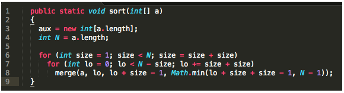
The case where size is 2 is shown in Figure 2.
The pair of blocks comprises:
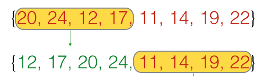
Figure 3 shows how the parameters lo, mid hi are determined.
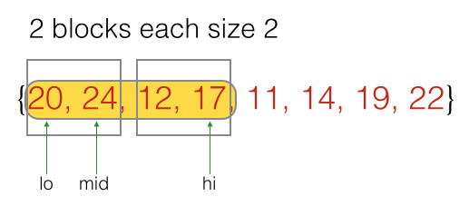
The method merge, shown in Figure 4, is called for each pair of blocks.
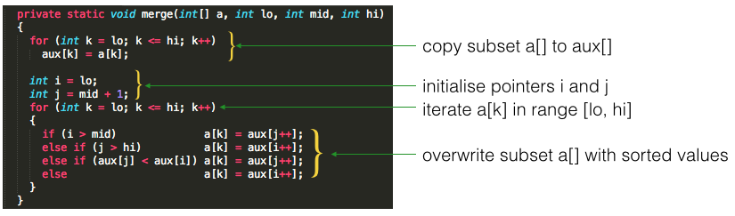
The parameter:
Math.min(lo + size + size - 1, N - 1)deals with the edge condition where otherwise an array bounds violation might occur.
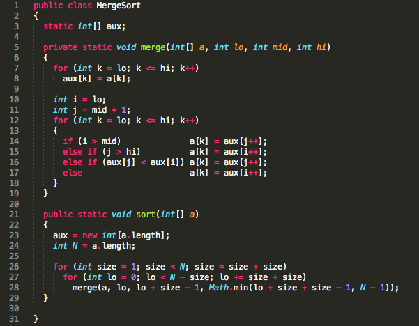
Optional - for information only
Figure 1 compares the sorting time for a series of randomly generated integer arrays.
For example, an array sized 20,000 means the following:
The running times for the array whose size is 500 million is estimated using a mathematical model. The estimating model is explained later. The remaining times were obtained by running the sorting algorithms on a desktop computer.
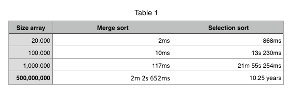
Optional - for information only
This step describes a simple model to estimate running times of the Selection sort algorithm.
Figure 1 shows a general representation of the running time of, for example, a sorting algorithm. The algoritm is used to sort a series of arrays of varying sizes and each running time is plotted against the corresponding array size.
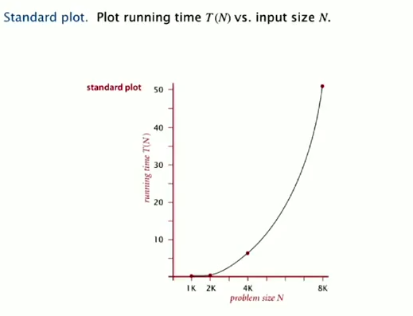
The problem with this approach (Figure 1) it that it is difficult, if not impossible in practice, to use such a plot to project running times for large numbers of data points.
Fortunately, it is a characteristic of many such problems that when the log of both the time and number of data points are plotted, an approximate straight line results. This is shown in Figure 2.
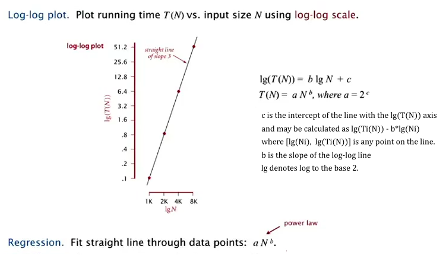
We can use this fact to derive a power law equation which allows us to estimate the very approximate running time of an algorithm for large numbers of data points that would be impossible to obtain empirically. For example the theoretical time to sort 500 million integers using Selection sort is estimated to be in the order of 10 years using the data obtained from these benchmark tests carried out on a modern desktop computer. This result has been calculated as follows:
We again point out that this approach is very approximate but, nevertheless, gives a reasonable comparison of the relative running times between the different sorting methods. Small variations in the coefficients used in the power law equation will result in greatly magnified variations in the estimated sort time.
We use search algorithms to find a group - one or more items - in a set of data. For example:
An example of a search algorithm is a linear search:
public static boolean linearSearch(String search, String[] list)
{
for (int i = 0; i < list.length; i += 1)
if (list[i].contains(search))
return true;
return false;
}Test this algorithm as follows:
public static void test()
{
String[] list = {"Able", "was", "I"};
String search1 = "ere";
String search2 = "Able";
boolean found1 = linearSearch(search1, list);
boolean found2 = linearSearch(search2, list);
System.out.println(found1);
System.out.println(found2);
}A study of the method reveals that in worst case situation every element in the list is queried.
Therefore the upper bound of the complexity of the method linearSearch is the order of the length of the list which is:
Suppose a list is sorted in ascending order.
unsorted 20 24 17 12 11 14 22 19
sorted 11 12 14 17 19 20 22 24Let's consider 2 examples, one where the item being sought is not in the list, the other where the item is in the list.
Example 1:
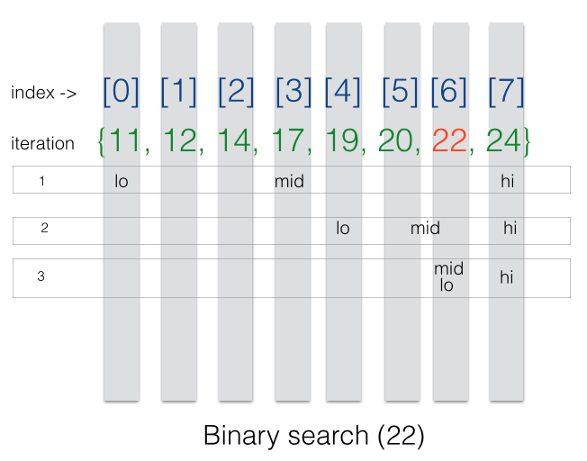
Example 2:
Follow the steps in Figure 2.
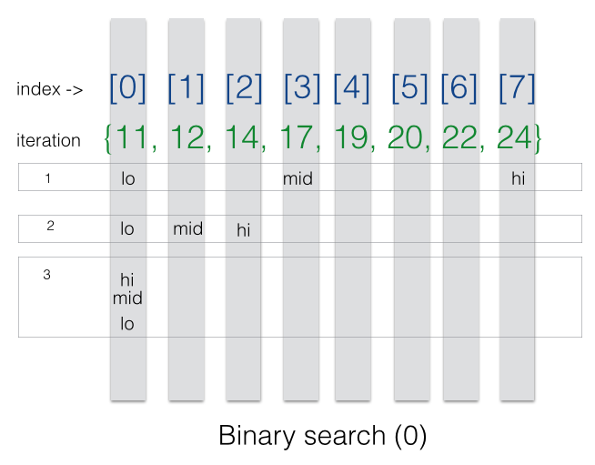
Here is an implementation of binary search:
/**
* Search a list of integers stored as an array for a particular integer
* @param a The sorted array of integers - the search space.
* @param sought The integer being searched for.
* @return The position index of the integer being sought if it exists. If it does not exist -1 is returned.
*/
public static int binarySearch(int[] a, int sought)
{
int lo = 0;
int hi = a.length - 1;
int mid;
while (lo <= hi)
{
mid = (lo + hi) / 2;
if (sought < a[mid])
hi = mid - 1;
else if (sought > a[mid])
lo = mid + 1;
else // sought == a[mid]: found match
return mid;
}
return -1; //failed to find sought match
}Create a class in your current lab project named BinarySearch.
Add this method, binarySearch.
Write and execute a test method.
public static void test()
{
int sought = 22;
int[] a = {20, 24, 17, 12, 11, 14, 22, 19};
//invoke a sort algorithm on *a*
int x = binarySearch(a, sought);
boolean found = x != -1 ? true:false;
System.out.println("Found? : " + found + " found at index " + x);
}Write out the varying sequence of arrays from the original unsorted to the final sorted arrangement for the following array that we have already encountered:
Unsorted: {20, 24, 17, 12, 11, 14, 22, 19}
Sorted : {11, 12, 14, 17, 19, 20, 22, 24}For example, the first change occurs when 20 is exchanged with 17 resulting in the following array:
Partially sorted : {17, 24, 20, 12, 11, 14, 22, 19}Use a print method or other wise to programatically display the varying sequence of arrays from the original unsorted to the final sorted arrangement for the following array that we have already encountered:
Unsorted: {20, 24, 17, 12, 11, 14, 22, 19}
Sorted : {11, 12, 14, 17, 19, 20, 22, 24}Write a Selection sort algorithm to sort an array of String objects.
Create and implement a class in the Sort project named SelectionSortString.
Use the method String.compareToIgnoreCase when comparing String objects.
Test your code with this array:
String[] s = {"z", "Z", "E", "A", "B", "Z", "e", "a", "b", "z", "C"};Manually use the Merge sort algorithm to sort the following array:
{18, 15, 19, 19, 13, 18, 14, 12}Write out the array as it would exist following each call to the merge method.
For example here is the array following the first invocation of merge:
15 18 19 19 13 18 14 12
Identify the blocks being merged at each invocation of merge.
The solution comprises 7 sets of arrays including the original unsorted and the final sorted versions.
5.1 Write two versions of a binary search algorithm to sort an array of strings:
5.2 Test the algorithms:
Here is the string to be searched for and the array of strings, the search space:
String sought = "able";
String[] target = {"Able", "was", "I", "ere", "I", "saw", "Elba", "How original!"};